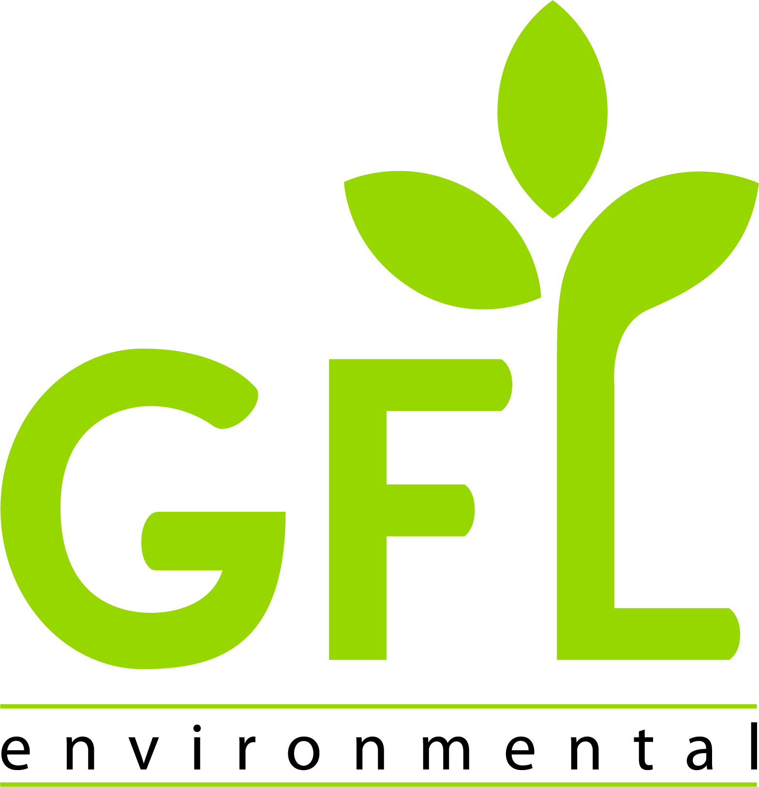

Low Income Spray And Neutering Program
The Low Income Spay and Neutering program is designed to support limited income individuals & families, in the Campbell River region.
CRPAWS works together with a network of veterinarians who are donating part
of the cost of the regular spay/neuter prices to help those who cannot otherwise afford to spay or neuter their pets.
Please consider the hard work that goes into this program and return the kindness by volunteering or spreading the word
to your friends and family about responsible pet ownership and spay and neuter practices.
How To Apply
- 1. Download the application by clicking Here
Or
pick up a sheet at the following locations.
Bosley's by Pet Valu
Campbell River Veterinary Hospital
Dogwood Pet Mart
Dogwood Veterinary Hospital
True Blue Quatics and Pet Supplies
Woofy's Pet Food - 2. Complete and email with all supporting documents to crpawslowincomeprogram@gmail.com
- 3. Someone from CR P.A.W.S. will contact you by phone to update you on your application status. All applications are subject to our approval. Note: Just because you submit an application does not mean that you quality for the program.
- 4. CR P.A.W.S. will make an appointment with the vet, providing pre surgery instructions, arranging for fee payment, and providing the release forms to be completed.
Who Qualifies?
This program is aimed at those who are low income and reside in the Campbell River region.
The qualifying pre-tax household income levels are as follows:
- Less than $20,000 in total yearly household income the client pays $0 and CR Paws covers balance.
- Less than $35,000 in total yearly household income the client pays $50 and CR Paws covers the remaining balance.
- Applicants must provide proof of Total Annual Income.
The attending Veterinatian does have the right to reschedule the appointment due to any unforseen circumstances.
How is this program funded?
CR P.A.W.S. low income spray and neutering program is 100% completely funded by donations
from our corporate sponsorship partners. We also fund the program with donations from caring individuals from our lovely community and CR P.A.W.S. Fundraisers.
GFL Environmental Inc. is supporting the first year of this program as a silver sponsor
About GFL Environmental
GFL Environmental (GFL) is a leading provider of diversified environmental solutions
with operations across North America. We believe that by providing safe, accessible, cost-effective
environmental solutions, we will encourage greater environmental responsibility and allow our customers
and the communities we serve to be Green For Life.
It’s always been a vital part of our mission to take care of our communities, and give back
to them in any way that we can. That’s why we launched the Full Circle Project (FCP) — our
inspirational, unique, community-driven charitable giving program that lets our customers decide how donations
are directed, and ensures that we support the causes that matter most to them. Every dollar of
FCP funding goes to local, high-impact charities that are improving lives in the communities where we all
live and work.
In 2020, FCP donated over $645,000 in funding to 89 different charitable organizations. Learn more about the Full Circle Project at gflenv.com/full-circle-project.
